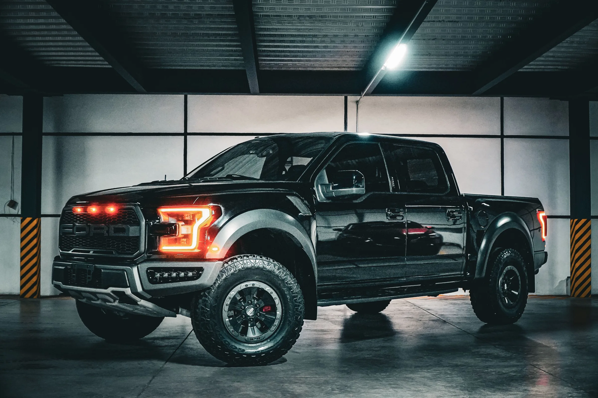
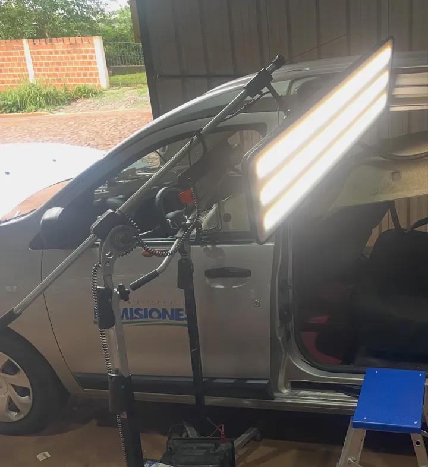

Chapa y pintura, sacabollos, cristales, cerraduras y estética del auto. Cotizá desde el celular y te respondemos por WhatsApp.
Chapa y pintura, sacabollos, cristales, cerraduras y estética del auto. Cotizá desde el celular y te respondemos por WhatsApp.

Tocá lo que necesitás y te armamos la consulta por WhatsApp. Eldorado y Montecarlo.

Un bolloSacabollos, sin pintar GranizoCapó, techo, todo el auto
GranizoCapó, techo, todo el auto
 Un choqueParticular o por seguro
Un choqueParticular o por seguro
 Un vidrioCristales y levantacristales
Un vidrioCristales y levantacristales
 La pinturaChapa, pintura, paragolpes
La pinturaChapa, pintura, paragolpes
 Que brillePulido, cerámico, lavado
Que brillePulido, cerámico, lavado